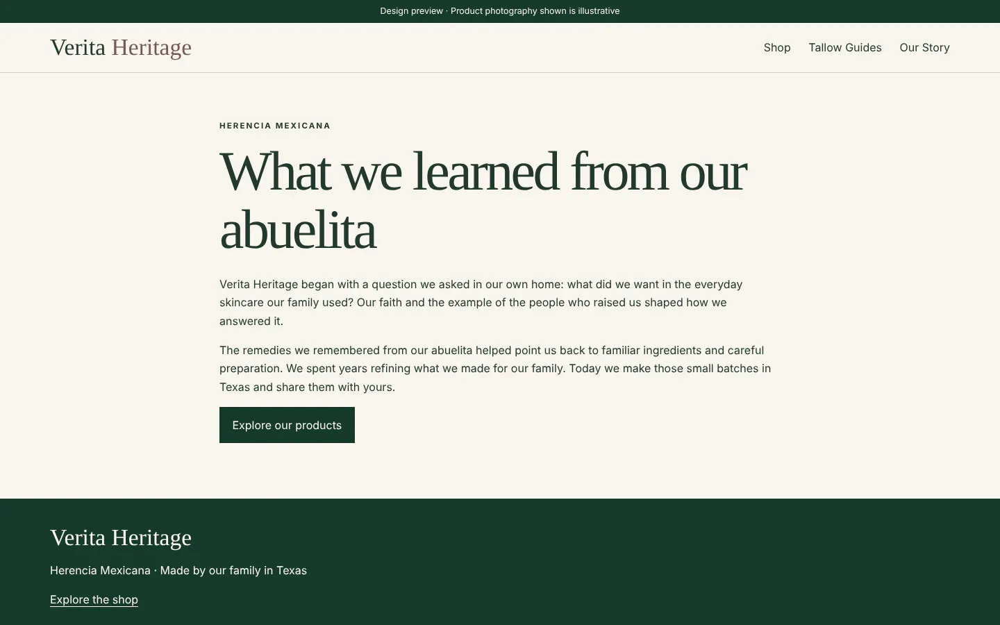
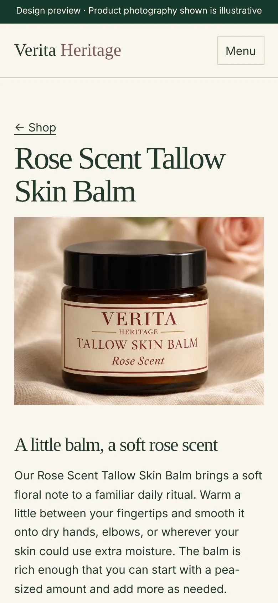

Verita Heritage
Bringing a family's kitchen-table story to a storefront
Verita Heritage is a Texas family making small-batch tallow balms and everyday skincare, shaped by the remedies they remember from their abuelita. In person, the story sells itself. The website had to carry it to people who'd never met the family.
- Industry
- Family-made skincare
- Location
- Texas
- Status
- Design previewStorefront design preview. Product photography shown on the preview is illustrative.
- What I did
- Brand story, Product presentation, Guides, Custom design

The business goal
When the family talks about their products at a market or with a friend, people hear where it came from: a grandmother's remedies, years of refining recipes at home, and a family that uses what it sells. Online, the same products risk looking like any other jar on a crowded marketplace.
The goal was a storefront that keeps that warmth, explains tallow to people who've never tried it, and lets the products be the center of attention.
Translating the in-person story
The story is told in the family's voice, briefly, and in more than one place, so a shopper meets it wherever they enter the site.
On the homepage, the headline is "Care we grew up with," followed by one line that carries the whole story: "Our abuelita's remedies helped shape the way we care for our family. Today we make tallow balms and everyday skincare in small batches and share them with yours." It's specific, warm, and short enough to read before scrolling.
On the Our Story page, under the heading "What we learned from our abuelita," the family explains how the business began with a question in their own home, how their faith and the example of the people who raised them shaped the answer, and how years of making skincare for their own family became the small batches they make in Texas today.
In the footer, "Herencia Mexicana · Made by our family in Texas" repeats the heritage on every page.

Product presentation
Each product page leads with how it feels to use, not with a list of claims. The Rose Scent Tallow Skin Balm page opens with "A little balm, a soft rose scent," then tells you how to use it: warm a pea-sized amount between your fingertips and smooth it onto dry hands or elbows.
Then it connects back to the family. A "Made in small batches in Texas" section names the ingredients and ties the product to the years spent refining what they used at home.
Guides answer the beginner's questions. Three short guides ("What is beef tallow?", "How to use tallow balm", and "Tallow balm vs. lotion") sit beside the shop and are linked from each product page. They help a curious first-time buyer without crowding the product pages.
Seasonal collections get room to breathe. The Christmas collection, a gift box with small gifts to open from Christmas Day toward Epiphany, has its own feature on the homepage.

Why these choices
Deep green, warm paper, and a soft rose accent. The palette feels handmade and calm, closer to a family pantry than a cosmetics counter, and lets the product photography carry the color.
Serif headlines with plenty of space. The type has a heritage feel without becoming old-fashioned, and the generous spacing keeps attention on each product.
Clear labeling. The preview banner says the product photography is illustrative, so nobody mistakes a design preview for a finished catalog.
Where it stands
This is a storefront design preview. Product photography is illustrative until final photos are taken, and online ordering isn't connected.